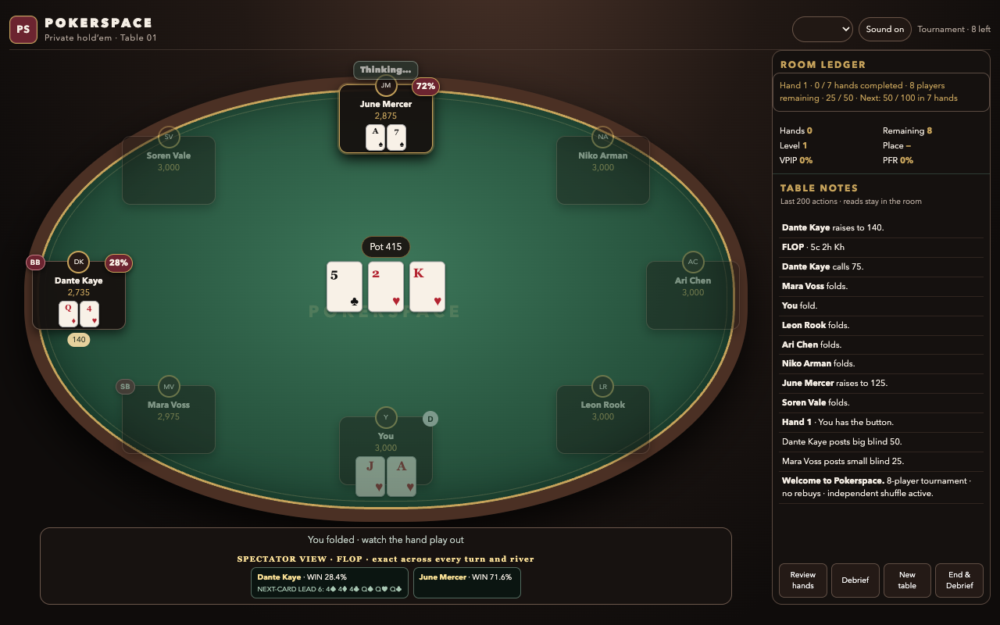

I asked for an online poker game in one shot. Six to eight players, opponents somewhere around the level of Phil Ivey and Daniel Negreanu; an absurd brief delivered without much ceremony, as though making seven world-class poker players appear inside a browser file was the sort of thing one might clear before dinner.
The first version appeared in minutes. It had a green table, named opponents, cards that dealt, chips that moved, and buttons that worked. It looked enough like poker to make the next question unavoidable: was any of it real?
Not really. One of the first cold reviews watched a hand where K8 offsuit raised, QJ offsuit reraised, pocket sixes raised again, and 94 suited stayed in. The opponents had names like “pressure architect” and “balanced theorist”; underneath, they were mostly enthusiasm with different labels.
The rules became the real project
I could have polished the table and hoped nobody noticed. Instead the game went in the other direction, down into the parts a screenshot cannot prove. Legal minimum raises, incomplete all-ins, side pots, odd chips, uncalled bets, heads-up blind order, burns, tournament eliminations, chip conservation; each one is invisible until it breaks, and poker players notice immediately when it does.
The tests grew alongside it: one ugly betting edge case at a time, then simulated tournaments, then complete hands against deliberately simple exploit strategies. One preserved adversarial run covered 750 hands and 5,960 actions with no illegal move, stall, missing chip, or hidden-information read; a larger all-bot run later covered 15,000 hands and 130,394 decisions with the same clean boundaries. None of that proved the bots were brilliant, but it did prove they were playing legal poker without cheating.
A tournament measured in hands
The game began as an endless cash table where busted players quietly reappeared with fresh chips. Nothing mattered. A tournament gave it a shape: 3,000 chips, eight seats, rising blinds, one winner. The small design choice I like most is that the blind levels advance by completed hands, not time. Pokerspace has three pace settings; if the clock controlled the blinds, playing slowly would make the tournament harder for no poker reason. Seven hands is seven hands at every speed.
The last two players exposed another fake seam. Full-table position labels were leaking into heads-up, so both opponents became too eager to fold and politely handed each other the blinds. A separate heads-up policy fixed the worst of it: across 60,000 simulated preflop hands, the small blind raised 59% and folded 13%, while the big blind defended an open about 61% of the time. The same run caught the next problem, though; those frequencies barely changed between five and sixty big blinds, so the blind-walking was fixed but short-stack play still was not.
River Room was the wrong name
The first build was called River Room. It was pleasant and generic, which was the problem. Pokerspace arrived later; not outer space, no planets or neon galaxies, just a private room where poker happens. The table moved toward walnut, green felt, oxblood controls, brass details, and cream cards. “Space” became room rather than theme.
This was also when the game stopped borrowing famous players in spirit. Seven original opponents remained, organised into five measured play styles rather than seven flattering bios: Pressure, Balanced, Value, Trap, and Nit. They are credible recreational bots, not solvers and not Phil Ivey in a JavaScript file. The smaller claim is the truer one.
Folding should not end the hand
The feature that made the game feel like its own thing came from a dead moment. In single-player poker, folding usually means waiting while bots finish without you. Pokerspace turns that wait into spectator mode: the remaining players’ win percentages and exact outs appear as the board develops. You get to watch the hand you left, not click past it.

The first version put all of that into a cramped rectangle under the table. It technically displayed the information and made it easy not to see. The better version moved the numbers onto the felt beside the live cards. This became a recurring lesson: secondary information should live where the decision is happening, not where the layout happened to have spare pixels.
The phone could open the file, but not play it
Because it is one self-contained HTML file, I assumed sending it to my phone would be the easy part. Telegram’s document preview opened it beautifully and blocked the JavaScript, so the tournament button did nothing. The file worked; the thing displaying it did not. I spent longer than I should have checking the game before putting up a temporary web tunnel and playing the exact public link on a phone.
It was a useful distinction. “Works on mobile” can mean the layout fits a narrow screen, or it can mean a person can receive the thing, open it, and begin. I had proved the first and mistaken it for the second.
Then I tried to make it teach
The next idea was the one that nearly discredited the whole thing. After each hand, Pokerspace would compare the player’s estimated chance of winning with the price of calling, grade the decision, and collect the mistakes into a session debrief. No live advice while choosing; the lesson only arrives after the decision is locked.
It looked convincing. Green for correct, red for mistake, percentages, chip values, a hand review. Then I played one ordinary hand and found the same fold described two ways.
“14% win chance vs 38% needed. Folding saves chips long-run.”
“Folded despite a profitable call. 0% correct. EV cost 49.”
The debrief had the sign backwards for folds. Worse, the “EV cost” was not proper chip EV, and raises were being graded from blunt equity thresholds that ignored sizing and fold equity. Each screen had grown its own little version of the truth. The interface was polished enough to make bad instruction sound authoritative.
A poker trainer confidently teaching opposite lessons is worse than a poker game that teaches nothing.
I stopped adding features and asked Mr. B to review the whole product cold. The answer was about six out of ten: the poker engine and table were in decent shape, spectator mode had become its own useful thing, and the trainer could still tell the same decision two different ways. The repair was deliberately narrower. One grading function now drives every fold and call verdict; raises stay ungraded where the model cannot support a responsible answer. The table keeps a compact result, while the detail belongs in review. Less instruction, more trust.
There were also two Pokerspaces
While the coaching was drifting, the release had split in two. The documented game was index.html; the newest teaching work lived in Pokerspace.html; the ZIP still contained the older one; parts of the test suite were reading each. Everything could pass while the thing being sent to someone remained stale.
This is a boring failure and therefore an important one. The current workshop version has one canonical game file, tests that read that exact file, and a release check that extracts the ZIP and compares the bytes. A feature is not shipped because it exists somewhere in the folder.
What it is now
Pokerspace is not an online poker room, a social casino, or a solver. It is becoming a private offline Hold’em training room: credible recreational opponents, a tournament with real consequence, spectator equity after a fold, and post-hand learning careful enough to say “ungraded” when it does not know.
It still lacks the reason to return tomorrow. There is no lasting career, no pattern of recurring leaks, no next-session goal; saving a tournament is persistence, not progression. The opponents are credible rather than proven strong, and the hand review is closer to a rich transcript than a true street-by-street replay. Those are the next real jobs. More decorative features are not.
The original brief was to make world-class poker opponents in one shot. Ten days later, the useful result is almost the opposite of that sentence. Good poker software is a stack of unglamorous truths: every chip conserved, every action legal, every opponent kept away from hidden cards, every lesson consistent with the last one. The visuals make it inviting; the restraint makes it worth trusting.
When Pokerspace appears properly on halfspaces, I want the playable game beside this journal. Not as proof that one prompt can make a finished product, because it cannot; as proof that a loose prompt can start a serious process, if you are willing to keep finding the part that is pretending.